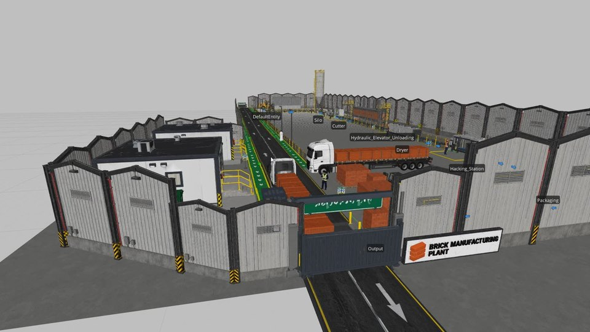

Senior Industrial Engineering Student
Plant data in. Engineering decisions out.
I use data analysis, industrial engineering methods, and simulation to understand operational problems, evaluate improvement opportunities, and support better decisions.
Operations · Data Analytics · Process Improvement · Simulation
Selected Work
More projects are in progress and will be added here.

From Downtime to Decisions
A brick production line after Lean Six Sigma: equipment failures fell by about a quarter, yet total unplanned downtime improved only slightly. I analyzed where production time was being lost and used simulation to evaluate which stations should be improved first.
How I work
Understand the problem
Define the problem, understand the process, and identify what needs to improve.
Analyze the evidence
Use data and engineering methods to identify patterns, root causes, and improvement opportunities.
Evaluate solutions
Compare alternatives, test assumptions, and recommend practical improvements based on evidence.
Technical Skills
Data Analytics
Statistical Analysis
Simulation
Process Improvement
Certifications
Certified Associate in Project Management (CAPM)®
Project Management Institute (PMI) · Issued January 2026 · Valid until January 2029
About
I'm a senior Industrial Engineering student at King Abdulaziz University, interested in operations, data analytics, process improvement, and simulation.
I enjoy working on practical engineering problems, using data to understand performance, identify improvement opportunities, and support better decisions.
Through my projects, I aim to connect industrial engineering concepts with real-world applications.
Let's connect.
I'm interested in internship, graduate, and entry-level opportunities in Industrial Engineering, operations, manufacturing, data analytics, and process improvement.